14 JavaScript in Web Browser: Geospatial plot and D3.js
In this chapter, we are going to learn one of the interesting topic in
data visualization using a avaScript library, d3.js.
Kita akan belajar dan memahami penggunaan d3.js berdasarkan
referensi (Murray, 2017) - Interactive Data Visualization for the Web.
Referensi ini merupakan referensi standar dalam
pembelajaran terkait visualisasi (lihat online course
CS 171 - Visualization
dari Harvard University)
Sedikit penjelasan tentang d3.js adalah merupakan JavaScript
library yang merupakan singkatan dari Data-Driven Documents.
Library ini dibangun oleh Mike Bostock (dan beberapa kontributor
lainnya) yang dapat dilihat di dalam repositori berikut
GitHub: D3.js
Di akhir tutorial ini kita akan mencoba membuat plot batas administrasi kecamatan kota Balikpapan. Ada banyak manfaat dari penerapan plot ini terutama untuk programmer yang bekerja di dunia GIS (Geospatial Information System). GIS ini bisa dikatakan merupakan cabang ilmu dari Information System.
14.1 D3.js installation
Pertama-tama siapkan tiga buah files (.html, .css, .js). Untuk file .html akan berperan sebagai viewer (atau interface antara file .js dengan web browser). Untuk file .css akan berperan sebagai styling document .html.
Berikut isi standard untuk ketiga berkas tersebut:
main.htmlstyles.cssplotd3.js
Ketiga file tersebut harus di taruh di tempat yang sama. Sebagai contoh
kita menggunakan working directory: d3-hello-world. Maka direktori kita
akan terlihat seperti berikut:
...
├─ d3-hello-world/
│ ├─ main.html
│ ├─ plotd3.js
│ ╰─ styles.css
├─ lib/
│ ╰─ d3.v7.min.js
...Pada contoh di atas terdapat tambahan folder lib yang merupakan tempat
library d3.js. File d3.v7.min.js dapat didownload di
link berikut (Klik kanan lalu pilih “Save as…”)
Berikutnya kita akan membuat versi “Hello World!” untuk d3.js
(file keseluruhan dapat dilihat di dalam direktori
d3-hello-world).
Perintah berikut kita tambahkan ke dalam plotd3.js
Perintah diatas mengatakan bahwa menggunakan library d3.js,
kita memanggil fungsi .select() untuk memilih HTML element <body>.
Lalu di dalam HTML element <body> ini kita tambahkan (append)
dengan HTML element <p>. Dan terakhir di dalam HTML element
paragraph <p>, kita isi dengan text “Hello World!”.
Jika prosedur yang diikut benar, maka kita akan mendapatkan hasil berikut di web browser (setelah menjalankan VSCode extension: Preview on Web Server)
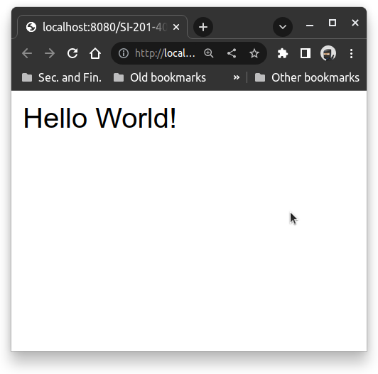
14.2 Working with data
Berikutnya kita akan melakukan pembacaan data dari file berformat
.csv. Dalam tutorial ini kita akan menggunakan file food.csv
(yang didapat didownload disini)
yang berisi data berikut:
food.csv
Food,Deliciousness
Apples,9
Green Beans,5
Egg Salad Sandwich,4
Cookies,10
Liver,0.2
Burrito,7Kemudian kita buat working directory baru, dan kita namakan
d3-binding-data dengan isi plotd3.js sebagai berikut:
plotd3.js
File .html dan .css masih sama seperti pada bagian sebelumnya (main.html
dan styles.css). Berikut kenampakan folder d3-binding-data
...
├─ d3-binding-data/
│ ├─ main.html
│ ├─ plotd3.js
│ ╰─ styles.css
├─ datasets/
│ ╰─ food.csv
├─ lib/
│ ╰─ d3.v7.min.js
...Program di atas melakukan pembacaan file .csv dengan fungsi .csv
dari d3.js. Keluaran dari d3.csv() adalah suatu Promise object
maka kita dapat sisipkan callback function dengan method .then()
Fungsi callback ini akan membaca data dan hasilnya ditampilkan
di console. Selengkapnya lihat direktori
d3-binding-data
Jika prosedur dijalankan dengan benar maka akan didapatkan data yang tercetak di bagian Console Web Browser seperti gambar di bawah ini
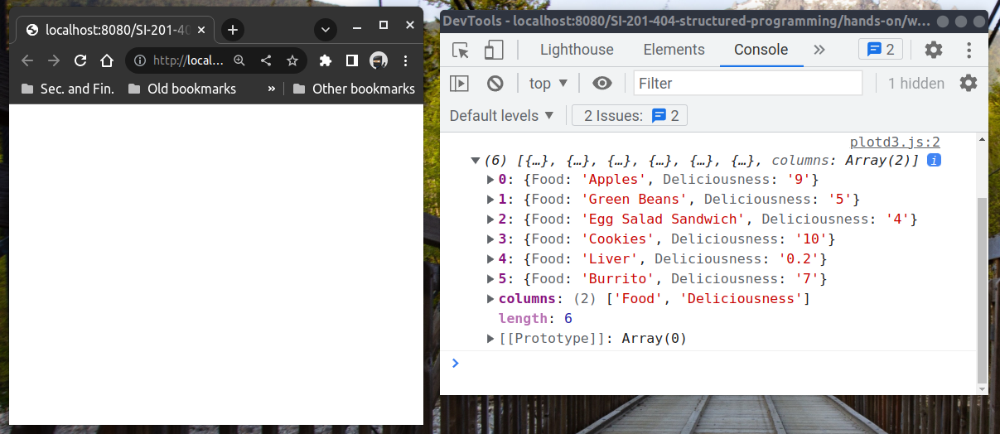
Terlihat di sebelah kanan, enam buah Arrays berisikan object.
Di halaman browser sebelah kiri belum terdapat output apapun,
karena kita belum menghubungkan hasil pembacaan .csv dengan
web browser.
14.3 Drawing with data
Pada bagian ini kita akan menggambar data yang dibaca dari .csv.
Kita siapkan dulu working directory seperti berikut:
...
├─ d3-drawing-data/
│ ├─ main.html
│ ├─ plotd3.js
│ ╰─ styles.css
├─ datasets/
│ ╰─ food.csv
├─ lib/
│ ╰─ d3.v7.min.js
...Disini kita hanya melakukan editing di file plotd3.js.
Sehingga untuk file main.html dan styles.css masih sama seperti
sebelumnya. Folder datasets dan lib dapat menggunakan folder
sebelumnya dengan cara menaruh folder d3-drawing-data bersandingan
dengan d3-binding-data.
Pertama kita buat kerangka awal pembacaan data dan pendefinisian beberapa layout seperti lebar dan tinggi grafik, HTML element SVG sebagai plot container
plotd3.js
// Set the dimensions and margins of the graph
let margin = { top: 30, right: 30, bottom: 100, left: 60 };
let width = 460 - margin.left - margin.right;
let height = 400 - margin.top - margin.bottom;
// Append the svg object to the body of the page
let svg = d3.select("body")
.append("svg")
.attr("width", width + margin.left + margin.right)
.attr("height", height + margin.top + margin.bottom)
.append("g")
.attr("transform",
"translate(" + margin.left + ", " + margin.top +")");
// Function declaration for making bar chart
function plotBarChart(data) {
console.log(data);
console.log(document.querySelector("svg"));
}
d3.csv("../datasets/food.csv")
.then(plotBarChart);Baris kode JavaScript di atas akan memberikan inisialisasi SVG element
yang dibuktikan dengan mencetak hasil inisialisasi SVG element
di jendela console sebelah kanan terdapat HTML element <svg>...</svg>.
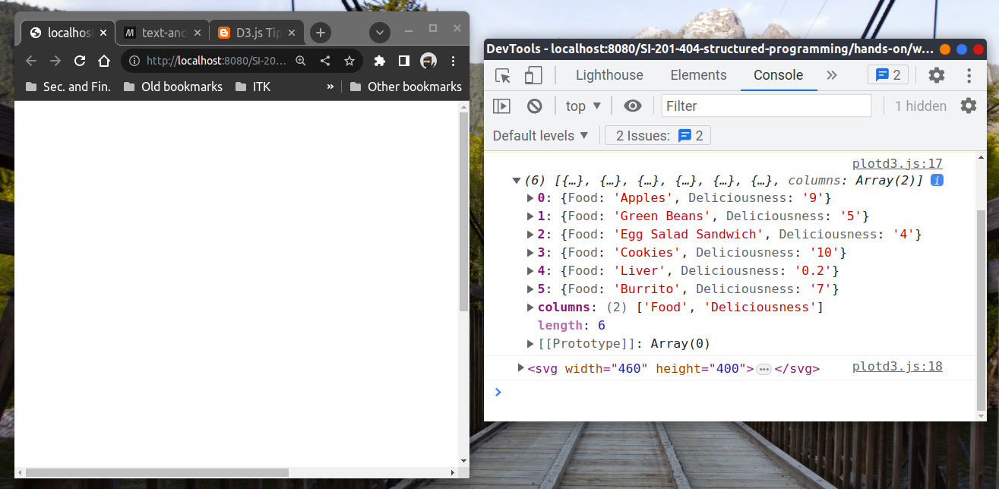
Langkah berikutnya adalah membuat sumbu-x dan y untuk gambar
Bar Chart yang akan kita buat. Tambahkan kode berikut di dalam
fungsi plotBarChart()
plotd3.js
// Some lines omitted
function plotBarChart(data) {
// Create an x-axis
let x = d3.scaleBand()
.range([0, width])
.domain(data.map((d) => { return d.Food; }))
.padding(0.2);
svg.append("g")
.attr("transform", "translate(0, " + height + ")")
.call(d3.axisBottom(x))
.selectAll("text")
.attr("transform", "translate(-10.0)rotate(-45)")
.style("text-anchor", "end");
// Add a y-axis
let y = d3.scaleLinear()
.domain([0, 11])
.range([height, 0 ])
svg.append("g")
.call(d3.axisLeft(y));
}
// Some lines omittedHasil yang didapatkan adalah sebagai berikut:
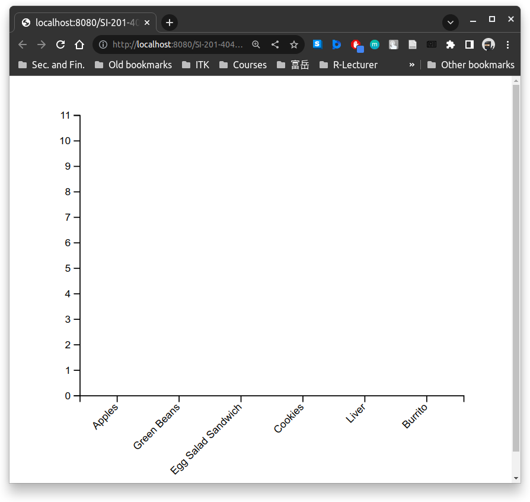
Berikutnya kita akan menambahkan data ke dalam axes tersebut.
Hal itu dapat dilakukan dengan menambahkan baris kode berikut
di dalam fungsi plotBarChart()
plotd3.js
function plotBarChart(data) {
// Some lines omitted
svg.selectAll("dataBar")
.data(data).enter()
.append("rect")
.attr("x", (d) => { return x(d.Food); })
.attr("y", (d) => { return y(d.Deliciousness); })
.attr("width", x.bandwidth())
.attr("height", (d) => { return height - y(d.Deliciousness); })
.attr("fill", "teal");
}
// Some lines omitteddan akan didapatkan hasil sebagai berikut:
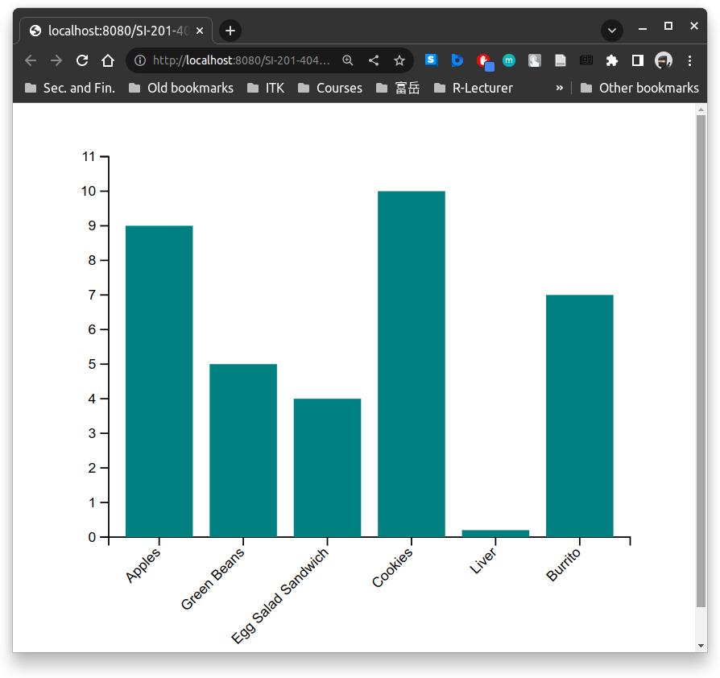
Tahap terakhir adalah penambahan label pada sumbu-y dan judul plot
Hal ini dapat dilakukan dengan menambahkan lagi baris kode berikut
di dalam fungsi plotBarChart()
plotd3.js
function plotBarChart(data) {
// Some lines omitted
// Add y-axis label
svg.append("text")
.attr("class", "y label")
.attr("text-anchor", "middle")
.attr("transform", "rotate(-90)")
.attr("y", -margin.left + 20)
.attr("x", -height / 2)
.style("font-size", "14px")
.text("Deliciousness");
// Add plot title
svg.append("text")
.attr("x", (width / 2))
.attr("y", 0 - (margin.top / 2))
.attr("text-anchor", "middle")
.style("font-size", "18px")
.text("Some delicious food");
}
// Some lines omittedLalu didapatkan hasil akhir plot Bar Chart menggunakan d3.js dan
pembacaan data food.csv sebagai berikut:
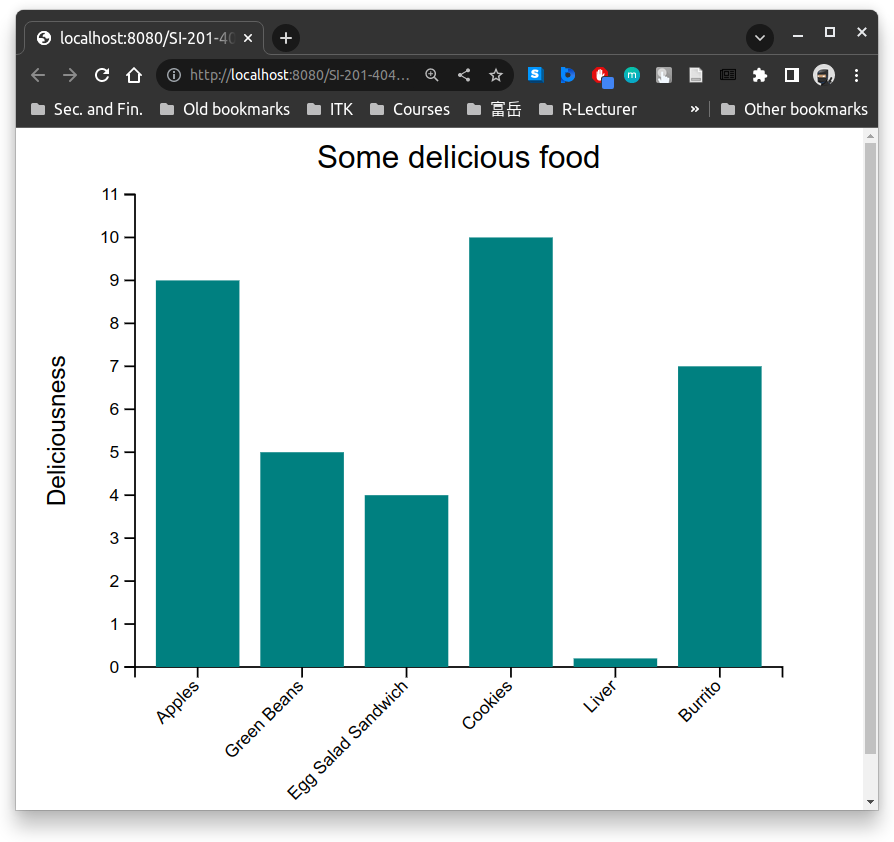
Mengingat kembali pertemuan sesi kelas, kita dapat juga menggunakan JavaScript library Plotly. Kelebihan dari Plotly adalah kita tidak perlu mendefinisikan banyak hal terkait tata letak axes, bars, axes labels, dan titles. Dan kode yang dituliskan juga tidak terlalu panjang seperti menggunakan d3.js. Namun yang menjadi nilai tambahan dari d3.js, kita mempunyai kebebasan untuk membuat plot dengan bentuk apapun karena kita memiliki kebebasan untuk mengatur secara rinci peletakan setiap elemen dalam plot Bar Chart. Pada akhirnya semua dikembalikan kepada pengembang manakah yang lebih utama kecepatan produksi visualisasi atau mengutakaman visualisasi yang orisinal sesuai kebutuhan pengembang.
Jika ingin mempelajari lebih dalam dan tidak ingin membuat dari awal, kita bisa mengunjungi laman berikut untuk menelusuri tata cara penggambaran grafik di D3.js Graph Gallery yang dibuat oleh Holtz Yan.
14.4 Making Balikpapan administration district map
Bagian ini adalah bagian terakhir dari tutorial mata kuliah Pemrograman Terstrutkut. Disini kita mengambil contoh ini dikarenakan keterbatasan internet di sesi praktikum untuk melakukan deploy personal blog menggunakan Next.js.
Untuk itu dipilih alternatif yang sekiranya masih berguna digunakan dalam tugas akhir ataupun final project yang lain.
Disini kita akan membuat plot batas administrasi kecamatan di kota Balikpapan, yang merupakan pusat kota bisnis dan industri terbesar di pulai Kalimantan. Di akhir bagian ini kita akan membuat gambar peta berikut:
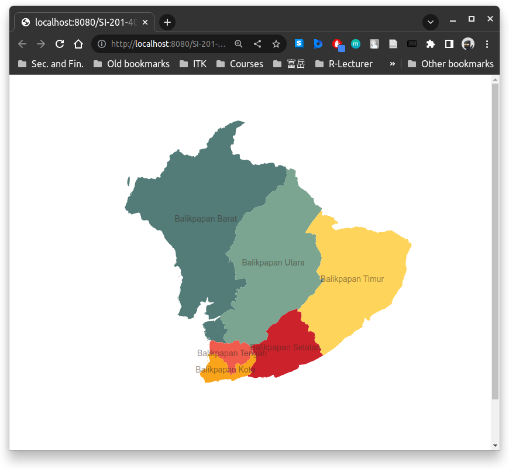
Pertama kita buat terlebih dahulu working directory sebagai berikut:
...
├─ d3-balikpapan-district-map/
│ ├─ main.html
│ ├─ plotd3.js
│ ╰─ styles.css
├─ datasets/
│ ╰─ balikpapan.geojson
├─ lib/
│ ╰─ d3.v7.min.js
...Untuk data balikpapan.geojson dapat didownload
disini.
Sama seperti pada bagian sebelumnya, kita buat terlebih dahulu
kerangka awal untuk program plotting map di plotd3.js.
(untuk isi main.html dam styles.css masih sama seperti sebelumnya).
Berikut kerangka awal untuk plotd3.js
plotd3.js
let margin = { top: 30, right: 30, bottom: 100, left: 60 };
let width = 460 - margin.left - margin.right;
let height = 400 - margin.top - margin.bottom;
// Append the svg object to the body of the page
let svg = d3.select("body")
.append("svg")
.attr("width", width + margin.left + margin.right)
.attr("height", height + margin.top + margin.bottom)
.append("g")
.attr("transform",
"translate(" + margin.left + ", " + margin.top +")");
function plotMap(data) {
console.log(data);
console.log(document.querySelector("svg"));
}
d3.json("../datasets/balikpapan.geojson")
.then(plotMap);Sama seperti pada bagian sebelumnya di “Drawing with Data”, kita menggunakan struktur yang sama yaitu mendeklarasikan terlebih dahulu HTML element untuk SVG berupa ukuran tinggi dan lebar dan ukuran margin atas, bawah, kanan dan kiri.
Berikutnya fungsi untuk menggambar peta kita namakan plotMap()
yang merupakan fungsi untuk melakan berbagai manipulasi data
sesuai dengan masukan yang disediakan oleh d3.js untuk menggambar peta.
Di baris terakhir merupakan pemanggilan data GeoJSON menggunakan
d3.json() yang menghasilkan suatu Promise object yang bisa kita sisipkan
suatu fungsi callback dalam contoh yang kita akan buat adalah fungsi plotMap()
Di dalam fungsi plotMap() kita masih menampilkan dua baris
perintah console.log() untuk melihat apakah data yang dibaca
sudah benar dan element SVG sudah dibuat dengan ukuran yang sesuai.
Berikut tampilan awal:
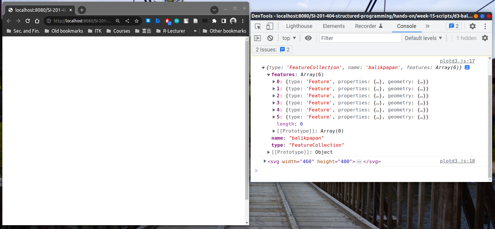
Web browser masih tidak menampilkan apa-apa, namun jendela console memberikan output yang kita inginkan yaitu enam wilayah kecamatan di balikpapan dan SVG element dengan ukuran yang telah kita tentukan.
Tahap berikutnya adalah melakukan beberapa transformasi koordinat data
dan transformasi koordinat peta ke SVG element path. Berikut adalah
tambahan baris kode JavaScript di dalam fungsi plotMap()
plotd3.js
// Some lines above omitted
function plotMap(data) {
// Some lines omited
// Create a projection function (our data is in latitude, longitude)
// This function is needed to project from spherical to cylindrical
let projection = d3.geoMercator().scale(1).translate([0, 0]).precision(0);
console.log(projection);
// Create a function to translate projected coordinate into SVG path
let path = d3.geoPath().projection(projection);
console.log(path);
}
// Some lines omittedVariabel yang pertama projection menyimpan fungsi transformasi untuk
mengubah koordinat lintang dan bujur di dalam data balikpapan.geojson yang
kita miliki ke dalam koordinat silinder. Proyeksi ini dikenal
sebagai Mercator projection.
(lihat di Wikipedia untuk lebih jelas).
Variabel yang kedua path adalah fungsi untuk melakukan transformasi
koordinat proyeksi ke dalam SVG element path. Fungsi transformasi ini
juga memerlukan inputan projection.
Dengan mencetak kedua fungsi transformasi itu ke jendela console, kita bisa melihat bentuk fungsinya (mungkin penamaannya tidak jelas, karena library d3.js sudah di-minifikasi untuk memperkecil ukuran file). Berikut output kedua fungsi transformasi di jendela console:
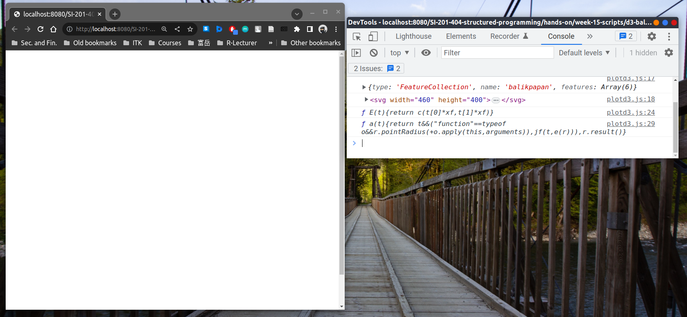
Tahap berikutnya melakukan scaling dan translation karena
ukuran path yang dihasilkan masih sangat kecil dan tidak sesuai
dengan ukuran SVG element yang telah kita tentukan di awal.
Untuk itu kita menggunakan rumus scaling dan translation ini
dari sumber berikut: “D3 - Large GeoJSON File does not show draw map properly using projections”. Kode JavaScript berikut ditambahkan di dalam
fungsi plotMap()
plotd3.js
// Some lines above omitted
function plotMap(data) {
// Some lines omitted
// Automatic plot scaling and translation
let bounds = path.bounds(data);
let scale = .95 / Math.max((bounds[1][0] - bounds[0][0]) / width,
(bounds[1][1] - bounds[0][1]) / height);
let transl = [(width - scale * (bounds[1][0] + bounds[0][0])) / 2,
(height - scale * (bounds[1][1] + bounds[0][1])) / 2];
console.log("bounds", bounds)
console.log("scale", scale);
console.log("transl", transl);
// Add scaling and translation to projection function
projection.scale(scale).translate(transl);
}
// Some lines omittedKita dapat melihat hasil perhitungan scaling dan translation in di dalam jendela console.
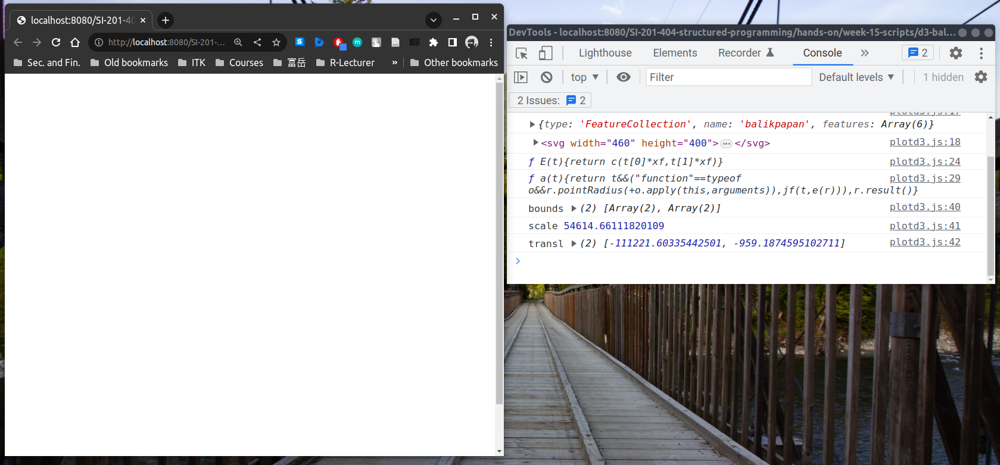
Selanjutnya adalah melakukan penggambaran tiap wilayah kecamatan
dan juga menambahkan attribute class di setiap SVG element path yang
mewakili wilayah kecamatan di kota Balikpapan.
plotd3.js
// Some lines above omitted
function plotMap(data) {
// Some lines omitted
// Create polygon for district and give the element iits className
// to be able doing styling using styles.css
svg.selectAll(".subunit")
.data(data.features).enter().append("path")
.attr("class", (d) => "subunit " + d.properties.KEC_.replace(" ", ""))
.attr("d", path);
}
// Some lines omittedPada baris kode JavaScript di atas, kita menambahkan class attribute
bernama “subunit” diikuti nama kecamatan, contoh “BalikpapanBarat”.
Dari class attribute ini kita memiliki dua pilihan styling
yaitu dengan menggunakan className subunit untuk melakukan
styling di seluruh wilayah kecamatan, atau secara specific
melakukan styling yang berbeda-beda di setiap wilayah kecamatan.
Dapat kita lihat pada bagian jendela Elements, terlihat
di bagian SVG element <path> terdapat attribute tambahan
<path class="subunit BalikpapanBarat">
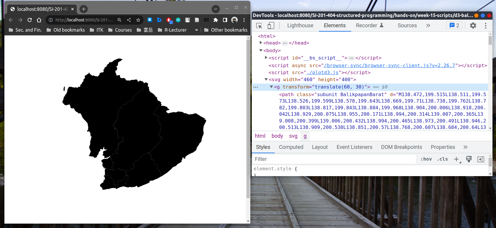
Gambar di atas menunjukkan semua wilayah masih berwarna hitam
(warna default), sehingga kita perlu melakukan perwarnaan. Kita
dapat melakukan pewarnaan wilayah kecamatan langsung di dalam JavaScript.
Namun cara yang lebih elegan adalah menggunakan file styles.css
Disini kita akan melakukan pewarnaan wilayah yang berbeda beda untuk
setiap wilayah kecamatan. Kita dapat melakukannya dengan menambahkan
perintah berikut di dalam file styles.css
styles.css
/* Some lines omitted */
.subunit.BalikpapanBarat { fill: #537c78; }
.subunit.BalikpapanUtara { fill: #7ba591; }
.subunit.BalikpapanSelatan { fill: #cc222b; }
.subunit.BalikpapanTengah { fill: #f15b4c; }
.subunit.BalikpapanKota { fill: #faa41b; }
.subunit.BalikpapanTimur { fill: #ffd45b; }Jika prosedur di atas dijalankan dengan benar, kita sudah dapat mencapai hasil yang cukup memuaskan mendekati hasil akhir seperti berikut:
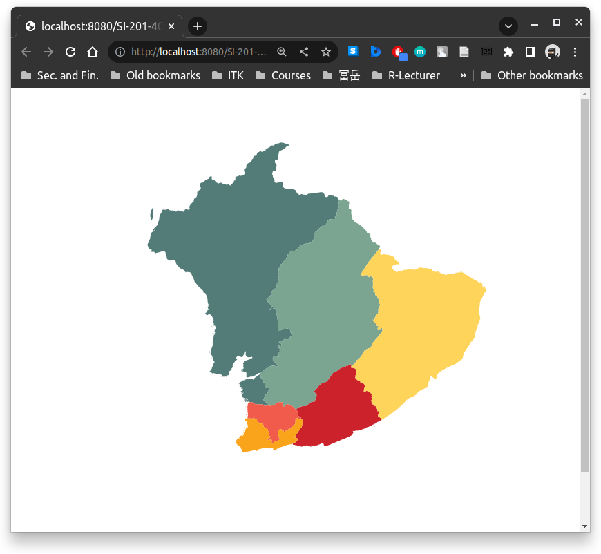
Langkah terakhir adalah menambahkan nama wilayah kecamatan. Disini kita
akan melakukannya secara otomatis dengan mengambil nama wilayah kecamatan
dari property data.features[i].properties.KEC_ dengan i merupakan
indeks wilayah yang ada dalam data balikpapan.geojson dari 0 hingga 5
(enam wilayah kecamatan). Berikut kita tambahkan kode JavaScript di dalam
fungsi plotMap()
plotd3.js
// Some lines above omitted
function plotMap(data) {
// Some lines omitted
// Add labels for district name
svg.selectAll(".subunit-label")
.data(data.features)
.enter().append("text")
.attr("class", (d) => "subunit-label " + d.properties.KEC_.replace(" ", ""))
.attr("transform", (d) => "translate(" + path.centroid(d) + ")")
.attr("dy", ".35em")
.text((d) => d.properties.KEC_ );
}
// Some lines omittedKemudian kita juga menambahkan sedikit styling untuk label nama wilayah
kecamatan ini dengan menambahkan kode styling .css berikut di dalam styles.css
styles.css
/* Some lines omitted */
.subunit-label {
fill: #332519;
fill-opacity: .5;
font-size: 8px;
font-weight: 300;
text-anchor: middle;
}Sehingga kita dapatkan hasil akhir seperti berikut:
Demikian tutorial sesi praktikum mata kuliah Pemrograman Terstuktur, semoga dapat memberi manfaat untuk pembaca dalam melakukan eksplorasi dan pemanfaatan JavaScript dalam menyelesaikan masalah sehari-hari. Perjalanan kita dalam belajar JavaScript masih panjang.
Ada kemungkinan di tahun mendatang JavaScript akan terganti oleh bahasa pemrograman lainnya. Namun pola umum dalam bahasa pemrograman seperti fungsi, datatype, object, variable, dan hal-hal dasar lainnya akan terus ada.
Exercises
- Jelajahi dan carilah di internet terkait tata cara membuat
file GeoJSON yang dapat di proses oleh d3.js.
Hint:- Umumnya file peta memiliki format
.shpyang merupakan file yang dihasilkan dari program standard untuk melakukan pengelolalaan data-data GIS. - File
.shpbiasanya dikumpulkan dengan file-file yang lain (tidak sendirian ada file penunjangnya berupa:.shx,dbf,prj). - Setiap file
.shpselalu memiliki sistem referensi koordinat (CRS - Coordinate Reference System) yang mengatur titik data dengan titik bujur dan lintang. CRS untuk setiap file.shpumumnya tidak memiliki standard yang sama. - Standar yang umum
untuk CRS adalah EPSG:4326. Untuk itu perlu dilakukan transformasi
koordinat dari file
.shpke EPSG:4326. - Hal ini bisa ditempuh
dengan program CLI (Command Line Interface)
ogr2ogr. - Lalu berikut dapat dilakukan konversi .shp yang sudah memiliki CRS EPSG:4236 menuju GeoJSON menggunakan program pengolah GIS seperti QGIS (gratis) atau ArcGIS (berbayar)
- Umumnya file peta memiliki format
- Tambahkan fitur animasi, sehingga membuat peta yang digambar lebih hidup. Sebagai contoh: ketika dilakukan mouse hovering, warna wilayah kecamatan berubah, atauy lebih besar dan muncul mendekati pembaca.